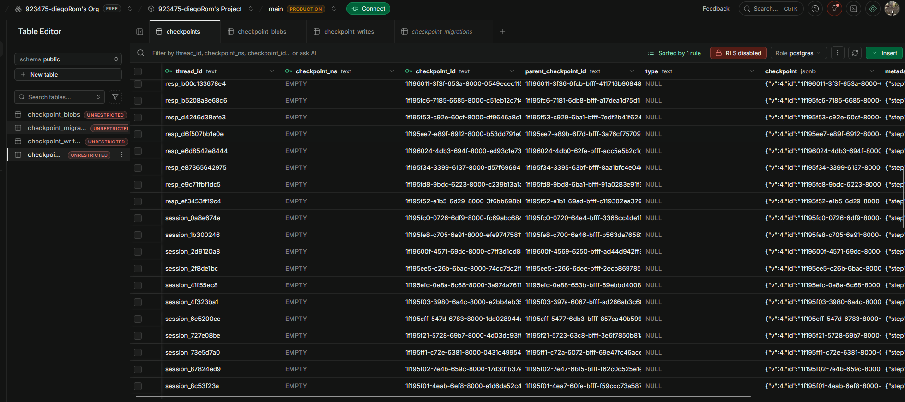
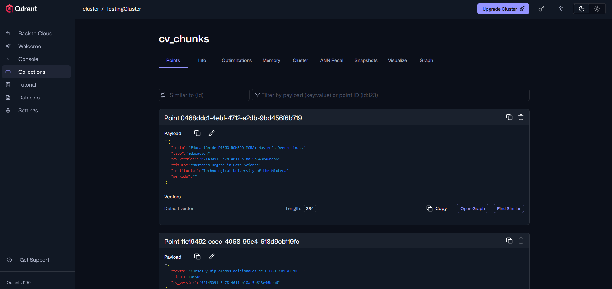
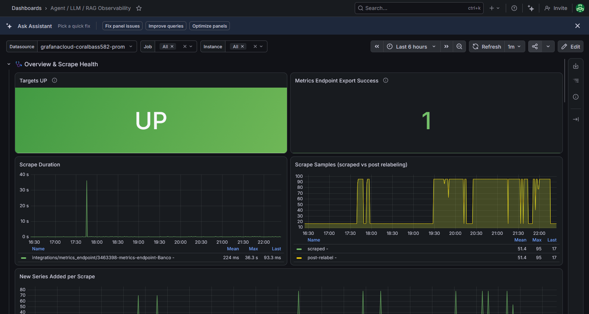
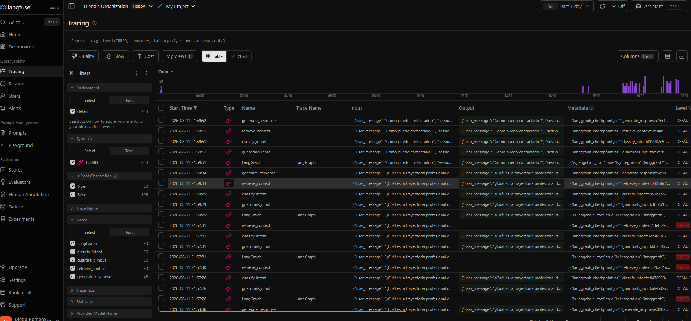
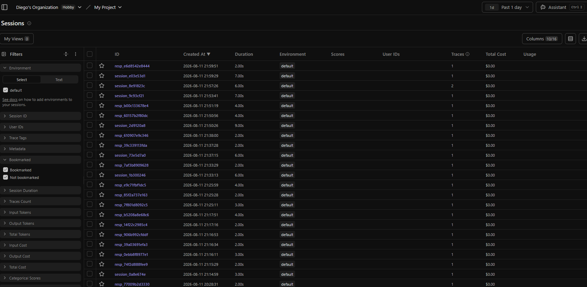

Sistema de IA generativa fundamentado, trazable y con fallas ruidosas
Construido para responder sobre la trayectoria profesional de Diego Romero Mora sin inventar una sola línea, y con cada decisión de retrieval y generación auditable de extremo a extremo.
Un chatbot conectado a un LLM sin más responde con fluidez, pero no con verdad. En un contexto donde la respuesta representa a una persona real ante un reclutador — o, por extensión, donde un agente responde en nombre de una institución financiera — la fluidez sin fundamentación es un pasivo, no un activo.
chunk_ids, chunk_types y top_score.Un grafo de estados explícito de cuatro nodos secuenciales — no una sola llamada a un LLM con un prompt largo. Cada nodo tiene una responsabilidad única y es observable de forma independiente.

Cada componente se eligió por una razón arquitectónica concreta, no por popularidad.

Cinco casos reales que muestran dónde el sistema afirma con seguridad, dónde se niega, y dónde falla ruidosamente en vez de inventar.
| Tipo de Consulta | Entrada del Usuario | Comportamiento Garantizado |
|---|---|---|
| IN-BOUNDS | "¿Qué experiencia tiene Diego en Inteligencia Artificial?" | Responde con seguridad, anclado a los chunks de experiencia: Teradata, LangGraph, conectores MCP/FastMCP. |
| ANÁFORA | "¿Y cuánto tiempo estuvo ahí?" | El clasificador resuelve "ahí" = Teradata usando el historial de sesión y aplica la regla de tiempo pasado. |
| CONTACTO | "¿Cómo puedo contactar a Diego?" | Recupera el chunk explícito de contacto (diegoromemora27@gmail.com, 5560438272) — nunca lo infiere ni lo aproxima. |
| OUT-OF-DOMAIN | "¿Cuál es la receta para tacos al pastor?" | Corta la ejecución en el clasificador de intención — no gasta tokens ni consulta Qdrant. |
| FAIL-LOUD | Falla de red hacia el servicio de embeddings (0 chunks) | "En este momento no pude acceder a los datos de la base de conocimiento..." — nunca improvisa. |
Trazabilidad punta a punta registrada en Langfuse Cloud y métricas exportadas a Grafana Cloud vía el endpoint /metrics.


